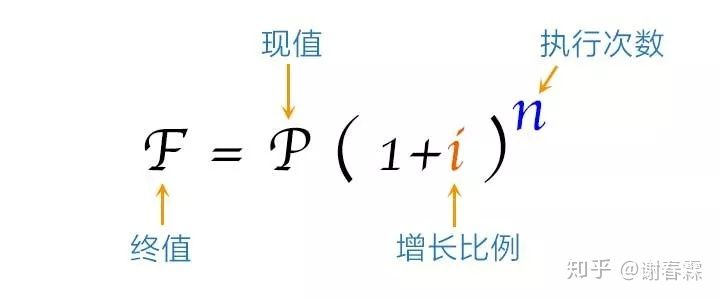
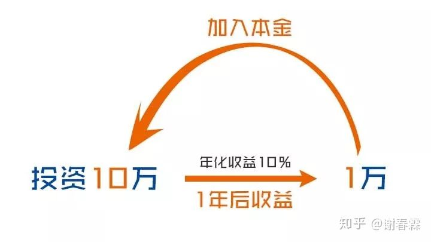
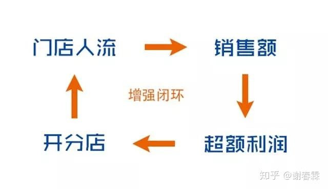
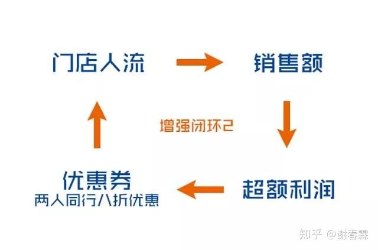
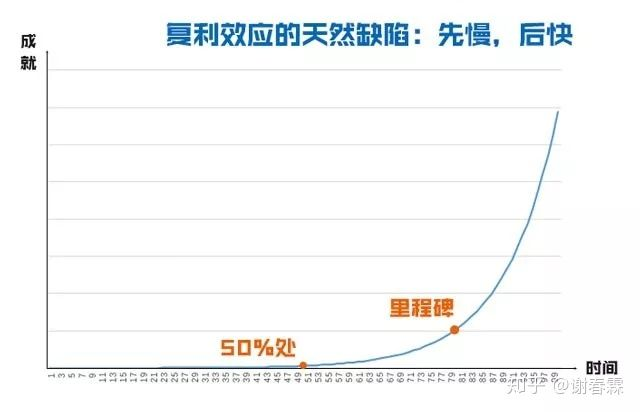
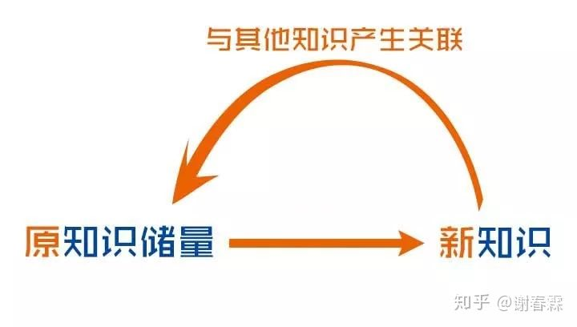
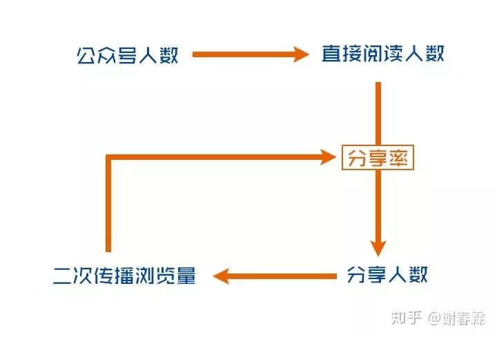
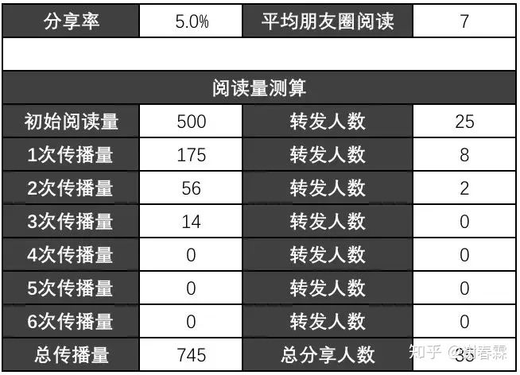
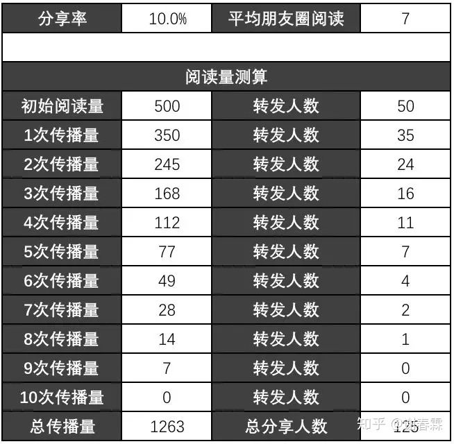
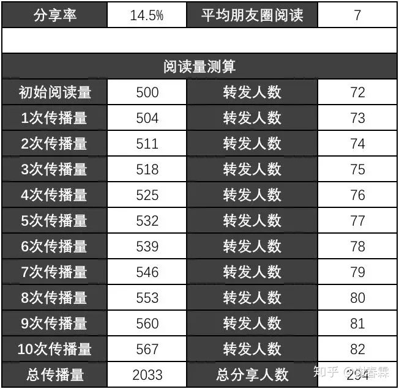

<!DOCTYPE html>
<html>
<head><meta name="generator" content="Hexo 3.9.0">
    <meta charset="UTF-8">
    <meta name="viewport" content="width=device-width, initial-scale=1, maximum-scale=1">
    
    <meta name="author" content="挥手の骑士">
    
    
    
    
    
    
    <title>复利原理 | 骑士の物语</title>
    <link href="https://yihuishou.github.io" rel="prefetch">

    <link rel="stylesheet" href="/css/bootstrap.min.css">
<link rel="stylesheet" href="/css/aos.css">
<link rel="stylesheet" href="/css/style.css">
    <script src="/js/jquery.min.js"></script>
    <script src="/js/bootstrap.min.js"></script>
    <script src="/js/aos.js"></script>
    <script src="/js/highslide/highslide-full.min.js"></script>
    <link rel="stylesheet" href="/js/highslide/highslide.css">
    <style type="text/css">
        @media (max-width: 768px) {
            body {
                background-color: #f0f0f0;
                background: url('/imgs/xsbg.gif');
                background-attachment: fixed;
            }
        }
    </style>
    
    <!--<script type="text/javascript">
      if (document.images) {
        var avatar = new Image();
        avatar.src = '/imgs/avatar.jpg'
        var previews = 'picHD_1.png,picHD_2.png,picHD_3.png,picHD_4.png,picHD_5.png,picHD_6.png,picHD_7.png,picHD_8.png,picHD_9.png,picHD_10.png,picHD_11.png,picHD_12.png,picHD_13.png,picHD_14.png,picHD_15.png,picHD_16.png,picHD_17.png,picHD_18.png,picHD_19.png,picHD_20.png,picHD_21.png,picHD_22.png,picHD_23.png,picHD_24.png,picHD_25.png,picHD_26.png,picHD_27.png,picHD_28.png,picHD_29.png,picHD_30.png,picHD_31.png,picHD_32.png,picHD_33.png,picHD_34.png,picHD_35.png,picHD_36.png,picHD_37.png,picHD_38.png,picHD_39.png,picHD_40.png,picHD_41.png,picHD_42.png'.split(',')
        var previewsPreLoad = []
        for(var i = 0; i < length; i++) {
          previewsPreLoad.push(new Image())
          previewsPreLoad[previewsPreLoad.length - 1].src = '/imgs/preview' + previews[i]
        }
      }
    </script>-->
</head></html>
<body>
    <!-- 背景轮播图功能 -->
    <section class="hidden-xs">
    <ul class="cb-slideshow">
        <li><span>天若</span></li>
        <li><span>有情</span></li>
        <li><span>天亦老</span></li>
        <li><span>我为</span></li>
        <li><span>长者</span></li>
        <li><span>续一秒</span></li>
    </ul>
</section>
    <!-- 欧尼酱功能, 谁用谁知道 -->
    
    <header class="navbar navbar-inverse" id="gal-header">
    <div class="container">
        <div class="navbar-header">
            <button type="button" class="navbar-toggle collapsed"
                    data-toggle="collapse" data-target=".bs-navbar-collapse"
                    aria-expanded="false">
                <span class="fa fa-lg fa-reorder"></span>
            </button>
            <a href="https://yihuishou.github.io">
                
                <style>
                    #gal-header .navbar-brand {
                        height: 54px;
                        line-height: 24px;
                        font-size: 28px;
                        opacity: 1;
                        background-color: rgba(0,0,0,0);
                        text-shadow: 0 0 5px #fff,0 0 10px #fff,0 0 15px #fff,0 0 20px #228DFF,0 0 35px #228DFF,0 0 40px #228DFF,0 0 50px #228DFF,0 0 75px #228DFF;
                    }
                </style>
                <!-- 这里使用文字(navbar_text or config.title) -->
                <div class="navbar-brand">骑士の物语</div>
                
            </a>
        </div>
        <div class="collapse navbar-collapse bs-navbar-collapse">
            <ul class="nav navbar-nav" id="menu-gal">
                
                
                <li class="">
                    <a href="/">
                        <i class="fa fa-home"></i>首页
                    </a>
                </li>
                
                
                
                <li class="">
                    <a href="/archives">
                        <i class="fa fa-archive"></i>归档
                    </a>
                </li>
                
                
            </ul>
        </div>
    </div>
</header>
    <div id="gal-body">
        <div class="container">
            <div class="row">
                <div class="col-md-8 gal-right" id="mainstay">
                    
<article class="article well article-body" id="article">
    <div class="breadcrumb">
        <i class="fa fa-home"></i>
        <a href="https://yihuishou.github.io">骑士の物语</a>
        >
        <span>复利原理</span>
    </div>
    <!-- 大型设备详细文章 -->
    <div class="hidden-xs">
        <div class="title-article">
            <h1>
                <a href="/2019/04/30/2948278912/">复利原理</a>
            </h1>
        </div>
        <div class="tag-article">
            
            <span class="label label-gal">
                <i class="fa fa-tags"></i>
                
                <a href="/tags/随笔/">随笔</a>
                
            </span>
            
            <span class="label label-gal">
                <i class="fa fa-calendar"></i> 2019-04-30
            </span>
            
        </div>
    </div>
    <!-- 小型设备详细文章 -->
    <div class="visible-xs">
        <center>
            <div class="title-article">
                <h4>
                    <a href="/2019/04/30/2948278912/">复利原理</a>
                </h4>
            </div>
            <p>
                <i class="fa fa-calendar"></i> 2019-04-30
            </p>
            <p>
                
                <i class="fa fa-tags"></i>
                
                <a href="/tags/随笔/">随笔</a>
                
                
                
            </p>
        </center>
    </div>
    <div class="content-article">
        <p>用于计算复利的增长趋势：</p>
<p></p>
<p>是不是感觉熟悉又陌生？</p>
<p>没错，我们高中课本里的一个数学概念，相信你也一定学习过，还用它计算过许多应用题，甚至有些同学现在还能背得出这公式….</p>
<p>可自从你毕业后，它好想就从此和你没什么关系了。</p>
<p>偶尔间，听到有人说它能让你财富自由？</p>
<p>你翻出了课本，看着这个公式，两眼呆滞…</p>
<p>除了能想到去买个理财产品「利滚利」之外，并不知道该如何使用…</p>
<p>P=现值？</p>
<p>是指投资的本金吗？我现在钱很少啊，复利至少得先有钱投资吧…</p>
<p>i=增长比例？</p>
<p>我怎么知道增长比例会是多少，我买股票亏钱的多…</p>
<p>买理财产品？收益又低，还经常遇到风险，不敢买啊~</p>
<p>n=执行次数？</p>
<p>一说复利，就让我等30年，那请你告诉我，我这10年怎么办？</p>
<p>F=终值？</p>
<p>完全没头绪，还是放弃吧…..</p>
<p>明晃晃的一个公式写在那里，每个字母也都能看的懂，可为什么就是用不了？</p>
<p>然后，你合上书，想想还是算了吧，复利公式从此又将束之高阁，这个「奇迹」就此变成了你的「遗迹」…</p>
<p>难道「复利」真的只能作为一个用在投资上的数学模型吗？</p>
<p>如果真是这样，你确实太小瞧查理了…</p>
<p>那我们该如何使用复利？</p>
<p>我们之所以不会使用复利，通常情况下就是被那个复杂的数学公式给困住了。</p>
<p>保罗·洛克哈特，在他的一本著作《一个数学家的叹息》中说：数学的本质是表达的艺术。</p>
<p>什么意思？</p>
<p>数学应该是一个思考工具，表达工具，而不是计算工具。</p>
<p>我们一看到这个数学公式，就会想到计算，然后在这个不完美的世界中，寻找各种条件参数往公式里塞，但是发现竟然塞不进去，你就蒙圈了，然后就不知道这个公式该如何使用了，然后，就没有然后了….</p>
<p>数学公式，是一种理想情况下的完美表达，可现实世界常常是不完美的。当你眼里只有公式的时候，你的思维就会被死死的限制在这个等式的两端，出不来….</p>
<p>那我们应该如何使用这个复利公式呢？</p>
<p>首先，就是不要将视线局限在公式的细节里「每一个字母代表什么意思，我应该如何去套用….」你要理解公式背后的思维方式，弄明白它到底是想表达一种什么逻辑关系？<br>其次，你接着想一想，如果你现在面对一个小孩子，你会怎么描述这个公式呢？这个大白话的描述，很可能就是这个公式背后的那个思考方式。<br>最后，把「具体的公式」抽象成为「思考方式」之后，就能将这个思维方式应用到其他地方了。<br>听起来是不是很简单？</p>
<p>这里暂停2分钟，再看一眼这个复利公式，你试着自己想一想，这个复利公式是想表达是什么逻辑关系？</p>
<p></p>
<p>… …</p>
<p>想到了吗？</p>
<p>复利其实就是：当你做了事情A，就会导致结果B，而结果B又会加强A，如此不断循环，循环次数越多，A就越强大。其实就那么简单的一个逻辑。</p>
<p></p>
<p>基于这个逻辑，就能产生不断自我增强的复利效应。比如：</p>
<p>网站是复利增长：</p>
<p>流量越多，搜索权重越高；搜索权重越高，流量越多；如此往复….</p>
<p>淘宝店是复利增长：</p>
<p>销量越高，排名越高；排名越高，销量越高；如此往复….</p>
<p>电商平台是复利增长：</p>
<p>买家越多，商家就越多；商家越多，就能吸引越多的用户过来买东西；如此往复…</p>
<p>这样解释，是不是就特别简单了？</p>
<p>那接下来你该怎么办？</p>
<p>如何把这个模型应用到你的商业模式、个人成长、财富增值上来呢？</p>
<p>接下来，我就一步步教你，如何设计一个拥有复利效应的模式出来。</p>
<p>设计复利效应的步骤：</p>
<p>第一步：找到必然关系</p>
<p>设计复利效应的第一步，一定要找到一个「支点」。</p>
<p>什么是支点？就是我做了A，是否能得到结果B？</p>
<p>就像是「鸡生蛋，蛋生鸡」是否有这个必然的因果关系？</p>
<p>所有的复利效应都是建立在这样的一个支点上的，如果这个支点不成立，复利效应就会轰然倒塌。</p>
<p>支点怎么找？</p>
<p>答案是：看书！</p>
<p>除非特殊情况下，一般不要去重新发明轮子。什么意思？</p>
<p>就是不要自己去摸索着写个因果关系，然后用自己的时间和金钱来验证它是否正确。你的顿悟，很可能只是别人的基本功，你要学会站在巨人的肩膀上。</p>
<p>最高效的方式，就是去相关领域中，找到那些已经被验证过的结论，或者是一些基本常识，甚至是数学定律，来用作「支点」。</p>
<p>很多大佬喜欢讲「第一性原理」为什么？</p>
<p>因为第一性原理就是那个必然为真的支点，从这个支点开始推演出的逻辑关系就必然为真。如果从这个点出发，设计出拥有复利效应的商业模式，就不会轰然倒塌。</p>
<p>比如你是做电商的，那必须熟记以下这个公式：</p>
<p>销售额=流量×转化率×客单价</p>
<p>这样你就知道，如果你想提高销售额，无非就是从流量，转化率，和客单价这几个维度入手去提高。</p>
<p>支点必须是公式吗？</p>
<p>不一定，只要有必然的因果关系就可以，比如：</p>
<p>文章写的越好，转发量就越高；</p>
<p>价格越贵，销量就越低（凡勃仑效应除外）；</p>
<p>销量越高，排名就越高…</p>
<p>因果关系不一定要特别严格，连牛顿的物理定理都被推翻了，世界上没有100%绝对正确的因果关系，只要在大部分情况下，这个因果关系是成立的就行。</p>
<p>第二步：设计增强循环</p>
<p>就是B如何反过来增强A？</p>
<p>第一种情况：他们之间天生就有增强循环<br>比如「鸡生蛋，蛋生鸡」这是自然规律，彼此天然有复利效应。</p>
<p>再比如，我们常见的「利滚利」，你投资了一个理财产品，年化收益10%，你投入10万元，1年后获得1万元收益。然后把这1万元收益，再做为本金，就可以利滚利，产生复利效应了…</p>
<p></p>
<p>再比如：这两年非常火的网约车平台</p>
<p></p>
<p>打车的人越多，就会吸引越多的司机加入；更多的司机加入，打车的人就越容易打到车，也就能吸引更多的用户，如此往复，不断互相促进….</p>
<p>这种天生有复利效应的模型，你只需要找到，并按这个逻辑落地执行出来就行。</p>
<p>第二种情况：需要补充要素的增强闭环<br>天然有复利效应的模型并不是那么好找，大多数情况下是你找到了某个支点，做了动作A产生了结果B，但是B好像无法反过来增强A了，怎么办？</p>
<p>比如在淘宝上，流量越多，销量越高；销量越高排名就越高，因此获得的流量就会越多。</p>
<p>可线下门店呢？没有平台给他排名，销量好并不能直接带来流量，怎么办？</p>
<p></p>
<p>如何把销售额用来增强人流？</p>
<p>这个时候，我们就需要在「销售额」和「门店人流」之间，增加一些环节，让他们之间连成一个「增强闭环」：</p>
<p>比如，销售额越多，意味着利润越多；利润多的话，是否可以把这些超额利润转化成新的分店，开在人流密集的地方呢？</p>
<p>再用赚到的钱，开更多的门店….如此往复，在不考虑经营情况和市场变化的情况下，你开店的速度，理论上会越来越快，并产生复利效应。你就从一个单店变成了大型连锁店。</p>
<p></p>
<p>当然，你还可以设计其他的循环方式，比如你也可以把「超额利润」的部分折换成优惠券的形式，发放给老客户，两人同行8折优惠，通过优惠券带来新的人流。</p>
<p></p>
<p>第三步：重复与耐心<br>为什么很多人找到了复利效应，比如说花了10万元买了年化收益10%的理财，但是没坚持2、3年就坚持不下去了？</p>
<p>因为复利效应天然有个「缺陷」，就是在初期很漫长的一段时间段里，增效都非常低，低到你几乎感觉不到它在增长；当你已经走到50%的位置的时候，甚至怀疑它的存在，因为几乎感觉不到有变化啊！</p>
<p>只有坚持走到某一个位置开始，可以称这个位置为「里程碑」，这个曲线才会急速上扬：</p>
<p></p>
<p>所以，你需要保持耐心，相信这条曲线一定会出现，相信复利的回报。然后不断重复做正确的事，做时间的朋友，静静等待那个里程碑的到来。</p>
<p>两个特殊的复利模型</p>
<p>现在你已经知道复利模型的基本设计步骤，接下来我会介绍两种特殊的复利模型：</p>
<p>第一种：加法运算→加幂运算<br>什么意思？就是这件事情原来你是做加法的：F=10+1+1…..；现在变成幂次运算了：F=10(1.1)n</p>
<p>是不是想起文章开头讲的复利公式了？</p>
<p></p>
<p>对的，这个就是标准的复利计算公式，可问题是，是什么导致它变成幂次运算的？</p>
<p>我们讲2个例子来理解这个概念：</p>
<p>案例1：你的知识量是如何增长的？<br>假如你不断的看书学习，那么请问，随着你读书的数量越来越多，你的知识量是按「算数」增长的，即每多读一本书「知识量+1」？</p>
<p>还是按「指数」增长的，即每多读一本书「知识量增加1%」？</p>
<p>答案是：都有可能，看你用哪种方式学习。</p>
<p>如果你把每一本书作为孤立的一本书来学习，那么他就是以加法的方式增长的。比如你学习了：复利增长、比例偏见、SWOT分析…</p>
<p></p>
<p>那应该怎么学才能产生复利效应，让知识指数增长呢？</p>
<p>那你就要把新学到的知识，放到自己原有的知识储量中去，然后和其他知识产生关联。</p>
<p></p>
<p>比如你今天学习了「复利」这个新概念，如果只是作为一个孤立的点来学习的话，它就是一条公式，储存在你的脑中。</p>
<p>那么如何让它和你的原有知识产生关联呢？可以试着这样思考：</p>
<p>如何在设计产品时加入复利效应？</p>
<p>如何在团队激励中加入复利效应？</p>
<p>如何在商业模式里加入复利效应？</p>
<p>复利效应和庞氏骗局是什么关系？</p>
<p>……</p>
<p>可以在白纸上画草图，或者用脑图工具，或者直接写文字笔记，把你的想法记录下来，让这个复利概念，和你其他的各种知识做一次联结。（为什么我们每篇文章底部都会建议你做课后作业？就是想让你把新学到的知识和你的知识存量发生一次联结）</p>
<p>这样，这个新学到的知识，就不是孤立的存在，而是在你知识存量里「长」出来了一个新概念。</p>
<p></p>
<p>你的知识存量就像是一个偌大的网络图，每个知识点之间都有联结，而每新增一个知识，就像是在这个网络图中增加一个新节点，这个节点又和其他节点相连，联结的数量越多，这个网络的信息含量增加的也就越多，那么你的知识量就会按复利的方式指数增长。</p>
<p>案例2：乐高积木<br>再说说乐高积木，乐高是全球最大的玩具公司，至今估值已达到2500亿元。</p>
<p>是什么缔造了这样的一个玩具帝国？</p>
<p>是什么让孩子们对他的玩具爱不释手？</p>
<p>他和其他玩具厂家又有什么区别呢？</p>
<p>他们有一种标志性的玩具产品：是各种一面有凸粒，一面有可嵌入凸粒的凹槽的塑料积木。</p>
<p>目前乐高总共生产了不同颜色、不同形状的这种积木共有 9000多种，但是你猜由着9000多种不同积木可以组合成多少种玩法呢？</p>
<p>官方给出的数据是：超过9.15亿种拼法，是积木数量的10万倍。</p>
<p>为什么会这样？</p>
<p>因为他每创新出1款新积木，并不是多了1款新积木，而是所有旧积木，多了一种新玩法，每一款新积木，都可以和原来所有的积木发生关系，这就产生了复利效应！</p>
<p>不仅是玩法的复利效应，也是销量的复利效应，因为拥有的套装越多，意味着你有更多的玩法和更多的创意，你就会越买越多，任何一款你都会想带回家，和原来的组合起来玩玩看…</p>
<p>第二种：量变→质变<br>就是原来这个模型是没有复利效应的，但是由于其中某个环节的数值增长到一定程度之后，这个模型便拥有了复利效应。</p>
<p>比如说微信公众号文章的传播，他的逻辑是这样的：<br></p>
<p>一篇文章从公众号发出，有一部分人打开了文章，成为了第一批「直接阅读者」</p>
<p>直接阅读者中，有一部分人觉得文章不错，便分享到了朋友圈（分享的人数 = 直接阅读人数 × 分享率）</p>
<p>发到朋友圈的文章，又会带来新的浏览量…</p>
<p>而新带来的读者中，又会有一部分人将文章转发到朋友圈，又带来一批新的阅读量….</p>
<p>因此，从逻辑上看，不断的有人分享到朋友圈，不断的带来新的阅读量，看似是一个「复利效应」的循环，但在这个环节中，有一个关键的指标：分享率</p>
<p>分享率的大小，决定了这个循环能循环多少次。</p>
<p>假设，公众号带来的直接阅读量=500，一个人转发到朋友圈带来的平均阅读量=7。那么我们就可以计算，在不同分享率下，能分别带来的总阅读量是多少：</p>
<p>在分享率=5%的情况下，总共循环了3次，共计带来745的阅读量；</p>
<p></p>
<p>在分享率10%的情况下，总共循环了9次，共计带来了1263的阅读量；</p>
<p></p>
<p>也就是说，分享率决定了循环次数，分享率越高，传播次数就越多，但整体上看，每次循环带来的新阅读量是越来越少的。因此，他并不是具有复利效应的模型。</p>
<p>那有没有一种情况，当阅读量提高到某一数值之后，每次循环带来的新流量变得越来越多了呢？</p>
<p>经过计算，我们得出这个数值=14.5%</p>
<p>当分享率≥14.5%的时候，每一次循环带来的新流量就比之前一轮带来的流量更多，因此会带来更多的人分享到朋友圈…如此往复，不断增强，从理论上来说，这篇文章的阅读量就可以无限增长…</p>
<p>到了这个分享率之后，你就会听到“pong”的一声，朋友圈被刷屏了….</p>

    </div>
</article>


                </div>
                <aside class="col-md-4 gal-left" id="sidebar">
    <!-- 此为sidebar的搜索框, 非搜索结果页面 -->
<aside id="sidebar-search">
    <div class="search hidden-xs" data-aos="fade-up" data-aos-duration="2000">
        <form class="form-inline clearfix" id="search-form" method="get"
              action="/search/index.html">
            <input type="text" name="s" class="form-control" id="searchInput" placeholder="搜索文章~" autocomplete="off">
            <button class="btn btn-danger btn-gal" type="submit">
                <i class="fa fa-search"></i>
            </button>
        </form>
    </div>
</aside>
    <aside id="sidebar-author">
    <div class="panel panel-gal" data-aos="flip-right" data-aos-duration="3000">
        <div class="panel-heading" style="text-align: center">
            <i class="fa fa-quote-left"></i>
            挥手の骑士
            <i class="fa fa-quote-right"></i>
        </div>
        <div class="author-panel text-center">
            
            <p class="author-description"></p>
        </div>
    </div>
</aside>
    
    <!-- 要配置好leancloud才能开启此小工具 -->
    
    
    <aside id="sidebar-recent_posts">
    <div class="panel panel-gal recent hidden-xs" data-aos="fade-up" data-aos-duration="2000">
        <div class="panel-heading">
            <i class="fa fa-refresh"></i>
            近期文章
            <i class="fa fa-times-circle panel-remove"></i>
            <i class="fa fa-chevron-circle-up panel-toggle"></i>
        </div>
        <ul class="list-group list-group-flush">
            
            <li class="list-group-item">
                <span class="post-title">
                    <a href="/2020/10/10/2/"></a>
                </span>
            </li>
            
            <li class="list-group-item">
                <span class="post-title">
                    <a href="/2020/08/18/55226946/">Agent v3.2.1 插件激活码</a>
                </span>
            </li>
            
            <li class="list-group-item">
                <span class="post-title">
                    <a href="/2020/07/21/2412014068/">干掉 CMS 未来属于 ZGC</a>
                </span>
            </li>
            
            <li class="list-group-item">
                <span class="post-title">
                    <a href="/2020/07/21/4075219928/">OpenJDK 和 OracleJDK 的抉择</a>
                </span>
            </li>
            
            <li class="list-group-item">
                <span class="post-title">
                    <a href="/2020/07/20/368594680/">Flutter 音乐播放器开发之路（一）</a>
                </span>
            </li>
            
            <li class="list-group-item">
                <span class="post-title">
                    <a href="/2020/07/15/3650854255/">XaaS 到底是什么？</a>
                </span>
            </li>
            
            <li class="list-group-item">
                <span class="post-title">
                    <a href="/2020/07/15/4036766117/">让 Windows 10 开机自动登录</a>
                </span>
            </li>
            
            <li class="list-group-item">
                <span class="post-title">
                    <a href="/2020/07/14/466733536/">给 Flutter 项目初始化构建提个速</a>
                </span>
            </li>
            
            <li class="list-group-item">
                <span class="post-title">
                    <a href="/2020/06/12/4125727764/">JavaScript 中 Splice 函数与数组塌陷</a>
                </span>
            </li>
            
            <li class="list-group-item">
                <span class="post-title">
                    <a href="/2020/06/12/1586694155/">在 Java 中缩写 Lambda 表达式</a>
                </span>
            </li>
            
        </ul>
    </div>
</aside>
    
    
    <aside id="sidebar-rand_posts">
    <div class="panel panel-gal recent hidden-xs" data-aos="fade-up" data-aos-duration="2000">
        <div class="panel-heading">
            <i class="fa fa-refresh"></i>
            随机文章
            <i class="fa fa-times-circle panel-remove"></i>
            <i class="fa fa-chevron-circle-up panel-toggle"></i>
        </div>
        <ul class="list-group list-group-flush">
            
            
            <li class="list-group-item">
                <span class="post-title">
                    <a href="/2019/06/05/3668064671/">Dart 2.3 踩坑集锦</a>
                </span>
            </li>
            
            <li class="list-group-item">
                <span class="post-title">
                    <a href="/2018/09/01/3864825553/">Java-Jwt 工具详解</a>
                </span>
            </li>
            
            <li class="list-group-item">
                <span class="post-title">
                    <a href="/2019/03/20/1671325781/">SpringDataJPA 分页 排序与动态查询</a>
                </span>
            </li>
            
            <li class="list-group-item">
                <span class="post-title">
                    <a href="/2018/08/28/3993534631/">SpringSecurity 中的注解使用详解</a>
                </span>
            </li>
            
            <li class="list-group-item">
                <span class="post-title">
                    <a href="/2019/09/27/2553549325/">Telnet 与 SSH</a>
                </span>
            </li>
            
            <li class="list-group-item">
                <span class="post-title">
                    <a href="/2019/03/11/1584671401/">一次由 Mysql 驱动引发的 Bug</a>
                </span>
            </li>
            
            <li class="list-group-item">
                <span class="post-title">
                    <a href="/2019/01/14/1112713561/">倒车原理示意图</a>
                </span>
            </li>
            
            <li class="list-group-item">
                <span class="post-title">
                    <a href="/2018/12/21/3314626403/">理解函数式编程中的 Side Effects</a>
                </span>
            </li>
            
            <li class="list-group-item">
                <span class="post-title">
                    <a href="/2017/12/26/2494496423/">解决 Vue 用 Webpack 打包空白的问题</a>
                </span>
            </li>
            
            <li class="list-group-item">
                <span class="post-title">
                    <a href="/2019/05/28/2119795723/">Gui 与 Cli 的抉择</a>
                </span>
            </li>
            
        </ul>
    </div>
</aside>
    
    
    <aside id="gal-sets">
        <div class="panel panel-gal hidden-xs" data-aos="fade-up" data-aos-duration="2000">
            <ul class="nav nav-pills pills-gal">

                
                <li>
                    <a href="/2019/04/30/2948278912/index.html#sidebar-tags" data-toggle="tab" id="tags-tab">热门标签</a>
                </li>
                
                
                <li>
                    <a href="/2019/04/30/2948278912/index.html#sidebar-friend-links" data-toggle="tab" id="friend-links-tab">友情链接</a>
                </li>
                
                
                <li>
                    <a href="/2019/04/30/2948278912/index.html#sidebar-links" data-toggle="tab" id="links-tab">个人链接</a>
                </li>
                
            </ul>
            <div class="tab-content">
                
                <div class="cloud-tags tab-pane nav bs-sidenav fade" id="sidebar-tags">
    
    <a href="/tags/SpringSecurity/" style="font-size: 15.536585739329457px;" class="tag-cloud-link">SpringSecurity</a>
    
    <a href="/tags/随笔/" style="font-size: 18.202123201281033px;" class="tag-cloud-link">随笔</a>
    
    <a href="/tags/Xml/" style="font-size: 16.019493963298096px;" class="tag-cloud-link">Xml</a>
    
    <a href="/tags/大前端/" style="font-size: 10.414483963941523px;" class="tag-cloud-link">大前端</a>
    
    <a href="/tags/Flutter/" style="font-size: 13.726338764437191px;" class="tag-cloud-link">Flutter</a>
    
    <a href="/tags/Dart/" style="font-size: 17.583494931564008px;" class="tag-cloud-link">Dart</a>
    
    <a href="/tags/Go/" style="font-size: 17.53348003975639px;" class="tag-cloud-link">Go</a>
    
    <a href="/tags/IDEA/" style="font-size: 19.447619519655188px;" class="tag-cloud-link">IDEA</a>
    
    <a href="/tags/Java/" style="font-size: 19.871241559027105px;" class="tag-cloud-link">Java</a>
    
    <a href="/tags/JavaScript/" style="font-size: 16.280703663858766px;" class="tag-cloud-link">JavaScript</a>
    
    <a href="/tags/Oracle/" style="font-size: 9.104969084126804px;" class="tag-cloud-link">Oracle</a>
    
    <a href="/tags/Photoshop/" style="font-size: 14.949438923846063px;" class="tag-cloud-link">Photoshop</a>
    
    <a href="/tags/Restful/" style="font-size: 9.501844432094089px;" class="tag-cloud-link">Restful</a>
    
    <a href="/tags/RPG-Maker-MV/" style="font-size: 17.420422354618104px;" class="tag-cloud-link">RPG Maker MV</a>
    
    <a href="/tags/SQL/" style="font-size: 13.214674479393302px;" class="tag-cloud-link">SQL</a>
    
    <a href="/tags/SpringBoot/" style="font-size: 19.699557986528873px;" class="tag-cloud-link">SpringBoot</a>
    
    <a href="/tags/Swagger/" style="font-size: 9.894467003046216px;" class="tag-cloud-link">Swagger</a>
    
    <a href="/tags/Windows/" style="font-size: 10.460438121613768px;" class="tag-cloud-link">Windows</a>
    
    <a href="/tags/Deepleanring/" style="font-size: 8.56387044699709px;" class="tag-cloud-link">Deepleanring</a>
    
    <a href="/tags/Vue/" style="font-size: 15.774605678151655px;" class="tag-cloud-link">Vue</a>
    
    <a href="/tags/Mysql/" style="font-size: 16.77256030558444px;" class="tag-cloud-link">Mysql</a>
    
    <a href="/tags/Docker/" style="font-size: 12.710019523479136px;" class="tag-cloud-link">Docker</a>
    
    <a href="/tags/Hexo/" style="font-size: 16.1750955625608px;" class="tag-cloud-link">Hexo</a>
    
    <a href="/tags/VsCode/" style="font-size: 9.705353295297444px;" class="tag-cloud-link">VsCode</a>
    
    <a href="/tags/SpringCloud/" style="font-size: 8.902327522067509px;" class="tag-cloud-link">SpringCloud</a>
    
    <a href="/tags/Redis/" style="font-size: 15.977433613571371px;" class="tag-cloud-link">Redis</a>
    
</div>
                
                
                <div class="friend-links tab-pane nav bs-sidenav fade" id="sidebar-friend-links">
    
    <li>
        <a href="http://noodlefighter.com" target="_blank">虾包</a>
    </li>
    
    <li>
        <a href="https://loli.la" target="_blank">超级叫了</a>
    </li>
    
    <li>
        <a href="https://konata9.github.io" target="_blank">吃土的小此方</a>
    </li>
    
</div>
                
                
                <div class="links tab-pane nav bs-sidenav fade" id="sidebar-links">
    
    <li>
        <a href="https://github.com/yihuishou" target="_blank">Github</a>
    </li>
    
    <li>
        <a href="https://gite.com/yihuishou" target="_blank">码云</a>
    </li>
    
    <li>
        <a href="https://www.zhihu.com/people/hei-yi-tian-shi-48" target="_blank">知乎</a>
    </li>
    
</div>
                
            </div>
        </div>
    </aside>
    
</aside>
            </div>
        </div>
    </div>
    <footer id="gal-footer">
    <div class="container">
        Copyright © 2018 挥手の骑士 Powered by <a href="https://hexo.io/" target="_blank">Hexo</a>.&nbsp;Theme by <a href="https://github.com/ZEROKISEKI" target="_blank">AONOSORA</a>
    </div>
</footer>

<!-- 回到顶端 -->
<div id="gal-gotop">
    <i class="fa fa-angle-up"></i>
</div>
</body>
<script src="/js/activate-power-mode.js"></script>
<script>

    // 配置highslide
	hs.graphicsDir = '/js/highslide/graphics/'
    hs.outlineType = "rounded-white";
    hs.dimmingOpacity = 0.8;
    hs.outlineWhileAnimating = true;
    hs.showCredits = false;
    hs.captionEval = "this.thumb.alt";
    hs.numberPosition = "caption";
    hs.align = "center";
    hs.transitions = ["expand", "crossfade"];
    hs.lang.number = '共%2张图, 当前是第%1张';
    hs.addSlideshow({
      interval: 5000,
      repeat: true,
      useControls: true,
      fixedControls: "fit",
      overlayOptions: {
        opacity: 0.75,
        position: "bottom center",
        hideOnMouseOut: true
      }
    })

    // 初始化aos
    AOS.init({
      duration: 1000,
      delay: 0,
      easing: 'ease-out-back'
    });

</script>
<script>
	POWERMODE.colorful = 'true';    // make power mode colorful
	POWERMODE.shake = 'true';       // turn off shake
	// TODO 这里根据具体情况修改
	document.body.addEventListener('input', POWERMODE);
</script>
<script>
    window.slideConfig = {
      prefix: '/imgs/slide/background',
      ext: 'jpg',
      maxCount: '6'
    }
</script>
<script src="/js/hs.js"></script>
<script src="/js/blog.js"></script>


</html>